LOOM · OPERATOR UPGRADE · 2026-11-16
운영 모듈 개선과 실제 연결 검증
DRAFT · 구현 체크포인트 / 전체 완료 아님
이 페이지는 FIRST3·SIX·NEXT 실제 검증과 현재 통합 검사 증거입니다. 모든 모듈의 최종 네이티브 승인 보고서가 아닙니다. 열려 있는 결함과 미완료 항목은 통과로 처리하지 않았습니다.
모듈별 독립 작업 트리에서 Opus 5.5가 함수 입출력·타입·오류 조건·테스트와 리뷰를 맡고, Sonnet은 명세된 제품 함수 본문을 구현합니다. ROOT는 공통 경계, 통합, GUI 검증과 Git 반영을 맡습니다.
Opus 함수 명세→Sonnet 함수 구현→Opus 리뷰→ROOT 통합 검사→외부 시뮬레이터 + 실제 UI→커밋 · 푸시
현재 구현 체크포인트 — 포함된 커밋·검사 결과·남은 작업. 이전 상태 기록의 커밋·푸시 전 표시는 해당 기록 시점의 내용입니다.
현재 통합 검사
1,561 + 1
전체 Rust: 1,561 통과 · 1 실패 · 6 ignored
실패 UART suite는 단독10/10 및 원래 동일 바이너리10/10 재검사 통과. 최초 전체 실행 exit101은 보존하며 한 번의 전체 통과로 표시하지 않습니다.
1,308 / 1,308
전체 UI + Shell + SDK
116개 파일 · 43.52초 · --maxWorkers=2. 새 이더넷 엔진 수정과 최종 네이티브 검증은 별도입니다.
6 / 6
내장 UI 파일 바이트 일치
타입 app/node · 린트 · 스키마 · diff 검사 통과. FIRST3 빌드 확인.
모듈별 상태
| 모듈 | 구현 · 검증 상태 | 남은 작업 |
|---|
| UART | B1–B9 리뷰·통합. ROOT 실 PTY 회귀 8개 통과. 기존 paced TX·JSONL 로그 실측 기록 보존. | 수정 빌드 재연결·신호·UI 동시 수신/검색/내보내기 및 마지막 STOP 검증 |
| CAN | 기본 DBC·ASC/BLF 실제 시뮬레이터 검증. UI239 및 분리 부하 검사 통과. | 주기 송신 실 gateway에서 미구현 반환. 제어 RPC 분류·CLI PID 간 소유권·내보내기 범위 수정 미구현: Claude 한도 차단 |
| Ethernet | 실 패킷 동시 대조, C1–C3 수정 통합. TCP 문맥·필드 필터·decode-as·내보내기 실검증. | C2 실제 대형 저널 경계와 C3 늦은 상태 회귀를 최종 빌드에서 재검증 |
| UDS | 독립 DoIP 서버: TP/S3·키 제공자·DID DB·연결 세대·중단·정리 기능 검증. | 최종 빌드의 UI 동시 수신 및 일반 네이티브 검증 |
| PSU | B5/B6 통합. 실제 SCPI·watch OFF·B 출력 유지·기록/CSV 값 대조 완료. | B6 출처 필드·시간 입력 폭 최종 빌드 UI/CSV 재검증 |
| Logic | 수정 빌드 27,470행 전체 탐색·CSV·검색 유지·키보드 가시성 실검증 통과. | 최종 동일 번들 네이티브 검증 |
| Video | 외부 MJPEG + 독립 FFmpeg 재생: ROI 전환·전후5프레임 SHA·보존 한도·stale/EOF 검증. | 격리 빌드 LIVE·ROI·증거8항목 통과. ROI 테두리 결함은 재현됨: Opus 수정·리뷰 필요 |
격리 빌드 재검증 · 최신 증거
공유 Cargo target의 다른 작업 트리 캐시가 이전 디코더를 끌어오는 문제를 확인해, ROOT 전용 target에서 새로 빌드했습니다. 아래 결과는 이전 NEXT 바이너리와 구별합니다. 영상의 ‘여는 중’ 현상은 새 빌드에서 재현되지 않고 LIVE로 표시됩니다. ROI 테두리 결함은 새 빌드에서도 재현됩니다.
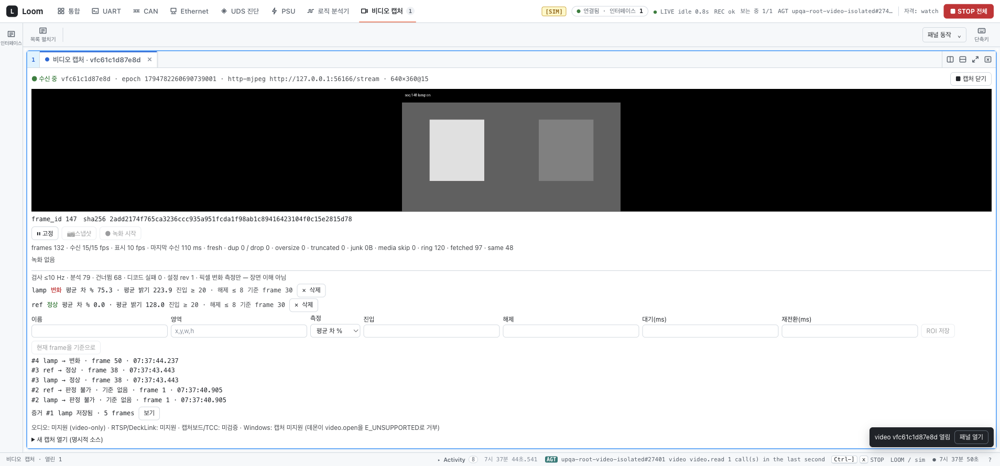
새 바이너리 · LIVE / lamp 변화 #4 · frame50 · ref 정상. 증거5개 프레임의 해시·크기·trigger가 모두 일치합니다. 8개 실제 대조 항목. 물리 캡처 보드·네이티브 검증은 별도입니다.이더넷 대형 저널도 새 바이너리에서 검증했습니다. 첫67109075바이트 조회는 예산 한도에 따른 부분 결과와 재개 커서를 반환합니다. 이어서 조회한14개 패킷은 원래 선택 범위의 REF·내용과 모두 일치합니다. 제한을 제거하거나 빈 결과를 완전 결과로 처리하지 않았습니다. C2 실제 재검증7항목 · 빌드 캐시 조사
모델 한도로 남은 CAN/ROI 테두리 수정과 최종 Opus 리뷰는 차단 상태입니다. 소스 역할을 반환한 자체 Opus/Sonnet14개 프로세스는 정상 종료했고, 미커밋 작업 트리·워크스페이스·인계 문서는 보존했습니다. 자동 재시도는 없습니다. 네이티브는 잠금 해제 확인이 필요합니다. 전용 target의 전체 Rust 검사에서 UART 이벤트 2초 대기 1개가 실패했습니다. 원래 동일 테스트 바이너리를 단독 실행해10/10 통과했으며, 최초 전체 실행 실패는 보존했습니다. 최종 전체 통과를 주장하지 않습니다.
이전 NEXT 빌드 · 영상 검사 실제 검증
ROOT가 기존 Opus 검증 계획을 실행했습니다. 모델 한도로 Opus 최종 리뷰는 대기 중이며, 하드웨어 캡처보드·TCC 검증을 주장하지 않습니다. 픽셀 변화 검사입니다.
출시 차단: CAN 수정 미구현 · ROI 테두리 결함 · 네이티브 잠금 대기
Claude Code 한도로 지정된 Opus/Sonnet 수정이 중단됐습니다. 임의 모델 전환·시각 기반 자동 재시도를 하지 않았습니다. 사용자 즉시 푸시 지시에 따라 현재 구현을 기능별 커밋으로 정리했습니다. 이 체크포인트 반영은 미완료 항목의 승인을 뜻하지 않습니다.
영상 lamp 변화 #4 / frame3977 / SHA 2c7553b8…ea8a4는 CLI·저널 epoch1794781383 seq568·증거 아티팩트에서 일치합니다. 화면은 동일 전환·프레임·SHA를 표시합니다. 화면에 저널 seq가 노출되지 않아 UI seq 직접 대조는 주장하지 않습니다. 평균 픽셀 차 75.28%, 변경 픽셀 100%; ref 정상 유지.
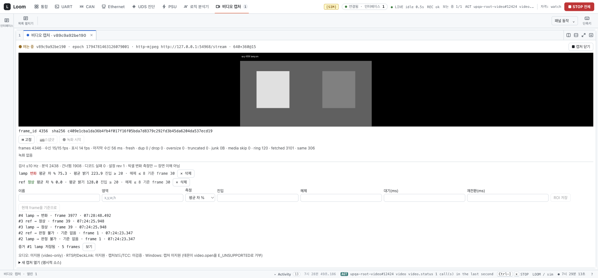
실제 수신 중 lamp 변화·ref 정상. 프레임은 들어오지만 상태가 ‘여는 중’으로 남고 ROI 테두리가 보이지 않는 결함을 함께 포착했습니다.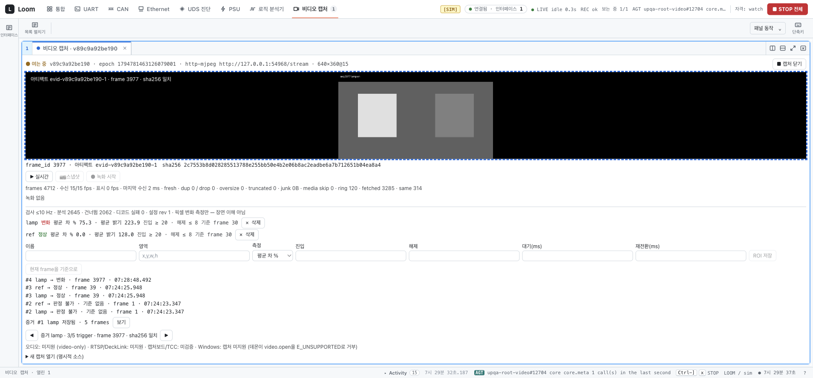
전후 5개 JPEG의 SHA-256과 크기 일치, partial 없음, 증거 pin 해제. 실제 아티팩트 뷰어가 동일 trigger 프레임과 SHA 일치를 표시합니다.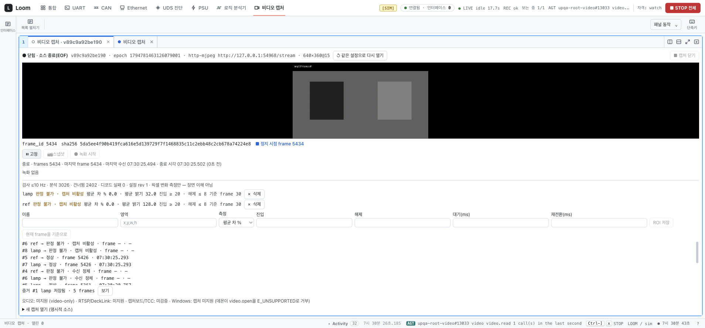
루프백 입력 EOF 후 닫힘·마지막 수신 시각과 두 ROI 판정 불가 표시. 입력 없음이 정상이 되지 않습니다.NEXT CLI 5b8ab70b…a36 / loomd 67cab96c…102 / UI 3a49d5a1…c0c. 기본 소스610029e + 미커밋 통합. FIRST3/SIX 캡처와 구별합니다. EOF 직후 첫 상태 조회는 ROI UNKNOWN 발행보다 먼저 올 수 있어 명시적 bounded wait로 최종 상태를 확인했습니다. 첫 실패 assertion 및 숨은 패널을 선택했던 테스트 timeout은 원문에 보존했습니다.
이전 빌드의 실제 브라우저 증거
새 private LOOM_HOME의 FIRST3 데몬을 Ego Lite space 18에서 watch 뷰어로 관찰했습니다. 사용자 데몬과 네이티브 앱은 변경하지 않았습니다. 아래 기록은 과거 조회 및 화면 동작 증거이며, 최종 동시 수신 마커 대조를 대신하지 않습니다.
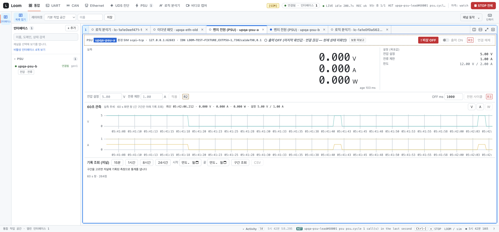
PSU · 실제 SCPI TCP fixture — 한도 12.00V / 2.00A, 벽시계 축, 전압·전류 추세와 설정값 선을 확인했습니다. 캡처 시점은 연결 종료 후 마지막 값이며, 화면에도 현재 상태 미확인이라고 표시됩니다.
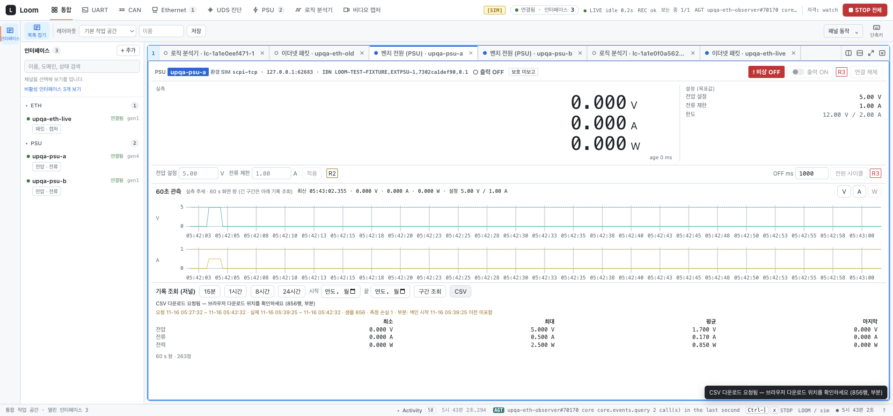
PSU · 기록 조회 / CSV — 15분 요청 중 실제 기록 856개, 측정 손실 1개 및 색인 이전 미포함을 부분 결과로 표시합니다. 실제 브라우저 다운로드의 CSV 파일도 856개 데이터 행과 complete=false를 포함합니다.
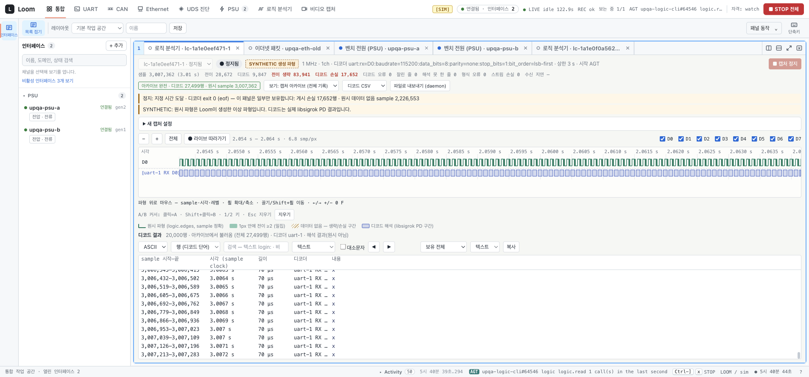
Logic · 수정 전 결함 증거 — 영구 아카이브는 27,499행을 보존했지만, 화면은 20,000행만 남기고 다음 페이지 버튼을 숨겼습니다. 데이터 보존 손실과 화면 범위 손실을 구별하며, 이 화면을 최종 통과 증거로 사용하지 않습니다. 결함 기록
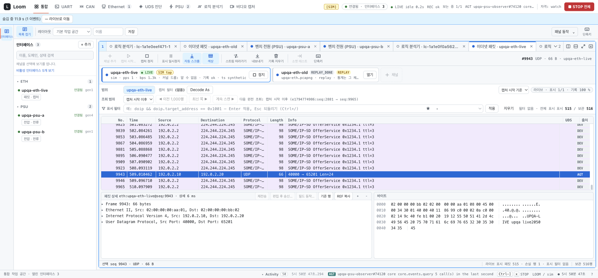
Ethernet · 실시간 동일 패킷 대조 PASS (현재 FIRST3 빌드) — seq 9943, epoch 1794774986, 66바이트 원본과 고유 마커를 CLI·브라우저에서 대조했습니다. CLI 요청 w32의 exact link와 source_seq 513이 일치합니다. 자체 전송 시뮬레이터의 관측 일치 증거이며, ECU 반응이나 물리 NIC 검증이 아닙니다. 대조 결과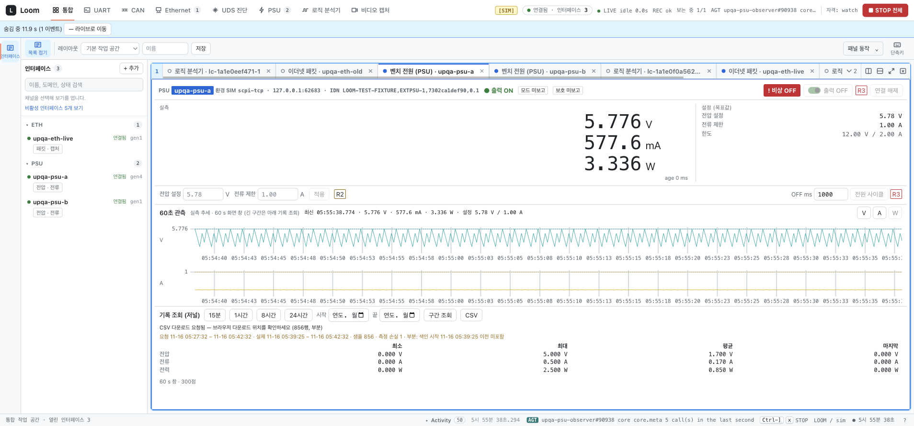
PSU · 새 측정값 대조 PASS (현재 FIRST3 빌드) — UI 시각 05:56:20.573과 seq 14959의 V/I/P가 표시 정밀도까지 일치합니다. 실제 루프백 SCPI fixture 값입니다. 보기 권한 비상 OFF는 서버 권한 거부가 확인돼 별도 OPEN 결함으로 수정 중입니다. 대조 결과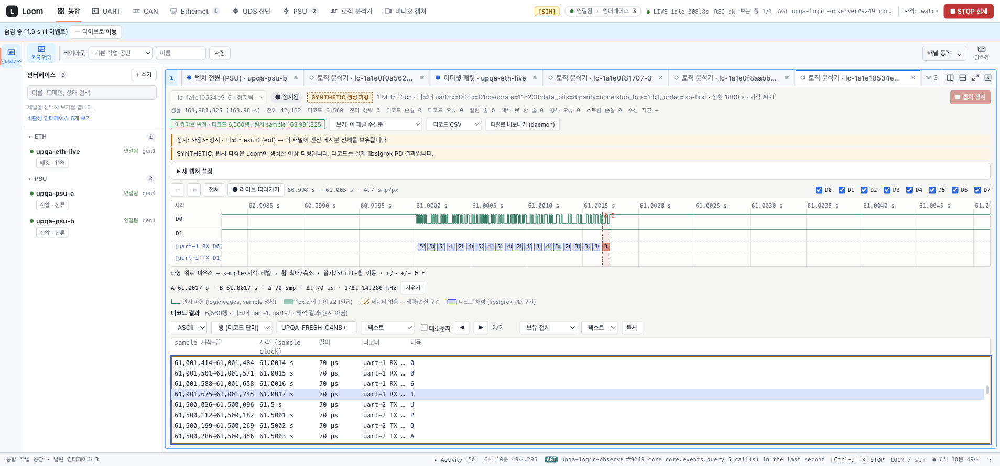
Logic · 미래 마커 수신 대조 PASS (현재 FIRST3 빌드) — 뷰어와 관측기를 준비한 뒤 미래 프레임 61을 선택했습니다. UI의 uart-1 sample 61,001,675–61,001,745, 문자 1이 CLI wait seq 21323과 일치합니다. 생성 디지털 소스 + 실제 sigrok 디코더이며 물리 프로브 검증이 아닙니다. 라이브 검색 위치와 키보드 스크롤 결함은 별도 수정 중입니다. 대조 결과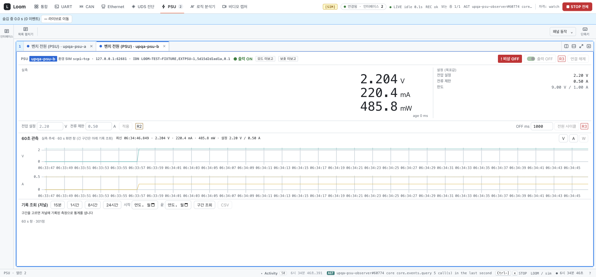
PSU 수정 검증 PASS — watch 뷰어로 A를 한 번 OFF했습니다. 요청 w8, epoch 1794778200, 최종 seq 2437과 독립 SCPI 로그를 대조했습니다. B는 313회 읽기에서 계속 ON이며 B로 전송된 변경 명령이 없습니다. 9개 대조 항목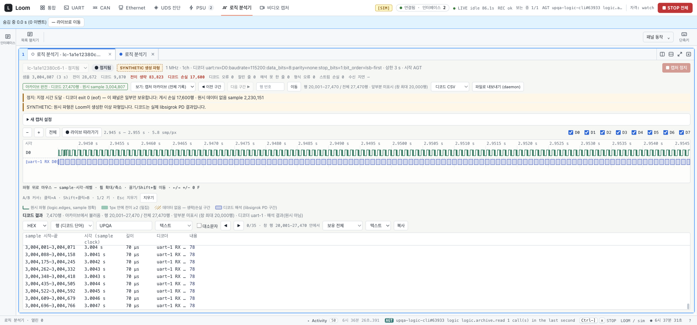
Logic 아카이브 창 수정 PASS — 새 실제 디코드 27,470행을 1–20,000 / 20,001–27,470으로 끝까지 탐색했습니다. 전체 CSV 파일도 27,470행입니다. 검색 96+35개, 범위 밖 이동 거부를 확인했습니다. 탐색 결과네이티브 앱 검증은 Mac 잠금·화면 꺼짐으로 대기 중입니다. 잠금 해제를 요청했으며 해제 전에는 네이티브 가시성 검증을 통과로 처리하지 않습니다.
확인된 한계와 남은 승인
Logic 별도 부하 측정에서 115200 UART는 아카이브 전체 기록을 보존했습니다. 1MHz SPI @10MS/s는 디코더 역압으로 캡처가 중단됐고, 부분 디코드 기록으로 표시됩니다. 물리 장비 성능 검증을 주장하지 않습니다.
CAN·영상 남은 수정 → 최종 Rust/영향 UI 검사 → 일치하는 일반 네이티브 번들과 실제 검증 → 남은 UI/CLI 동시 수신 검증 → 보고서 확정 → 기능별 커밋·푸시가 남아 있습니다. 공유 Rust target에서 다른 작업 트리의 디코더 캐시가 섞인 컴파일 오류가 발생해 원문을 보존하고 ROOT 전용 target으로 통합 검사를 시작했습니다. 이 결과는 아직 통과가 아닙니다.
빌드 식별과 원문
소스 기준 610029e + ETH/PSU/Logic 미커밋 통합. UI digest 5be9486d…07293, loomd SHA256 24b7928d…bc513. 이후 수정 및 최종 통합 빌드와 구별합니다.